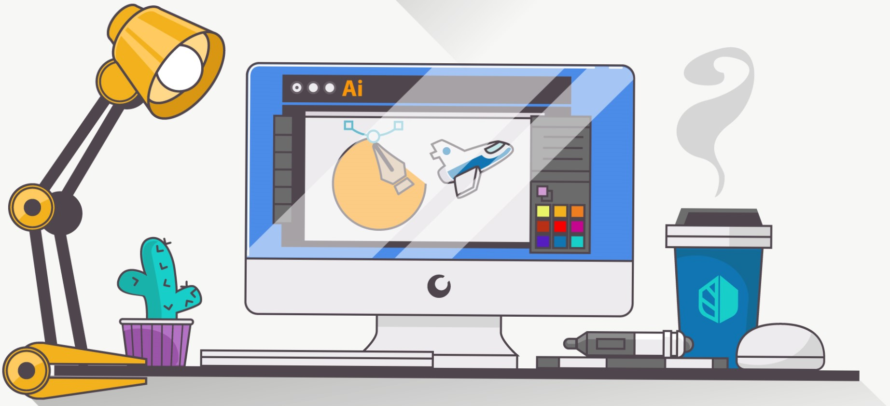

About Me
A Brief History
My name is Dakaria Amani Bishop and I am a graphic designer based who lives in Benson. North Carolina, Currently a student at Wake Tech Community college to pursue her degree in design. Dakaria Has worked on various projects and commissions to enhance her skills and work. I have made it my passion to design with purpose and bring ideas to reality digitally. I hope to continue in this line of work and improve greatly in the future.
Work Experiences
I have over 3 years of experience in Graphic art and design. I have designed various logos, business cards, flyers, etc. for different brands. Moreover, I have experience in designing many websites. I am experienced in understanding customer needs and requirements and delivering the product as requested.